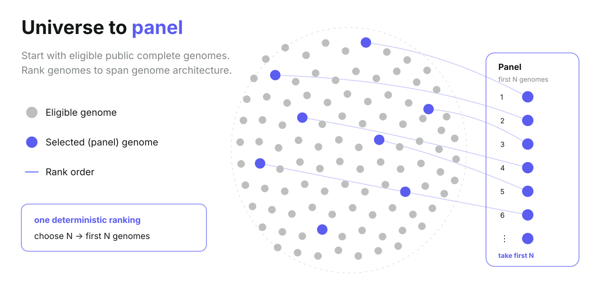
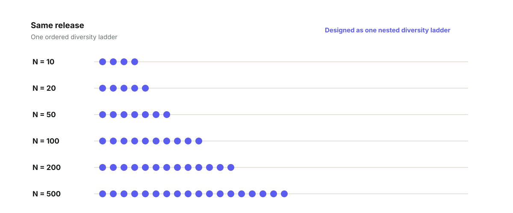
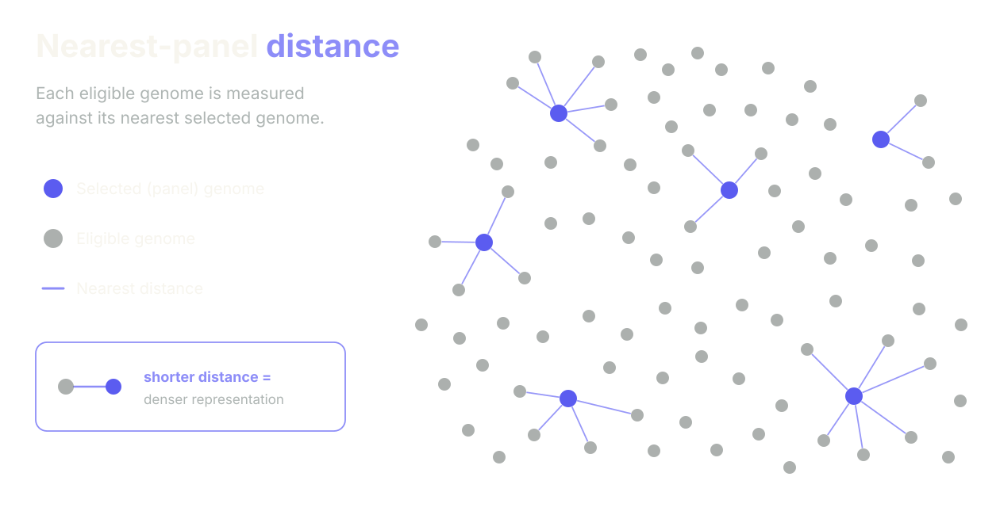
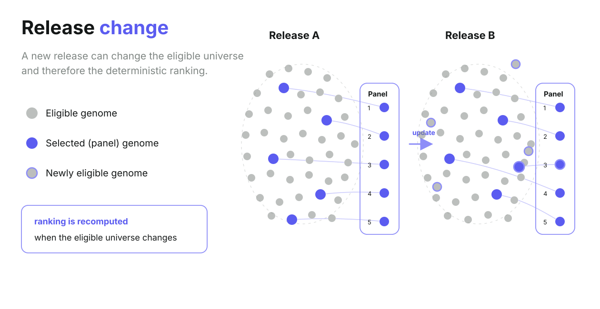

Selection can become subjective
Without explicit rules, a benchmark can depend on which organisms happen to be familiar, interesting or convenient.
We need a manageable set of bacterial genomes. Which ones?
Choose how many genomes you can realistically analyse. BacSelect returns a deterministic selector-v1 reference panel that spans bacterial genome architecture within the frozen validation foundation, while controlling the influence of heavily represented species.
Selector v1.0.0 reference panels are validated. The first dated monthly release remains pending.
Conceptual diversity map · positions are illustrative, not measured validation coordinates.
The selector-v1 reference panel is validated and frozen. It is a reference set derived from the validation foundation, not a dated monthly BacSelect release.
The frozen selector-v1 reference artifacts are published with this site. Choose N and select Get reference panel to download the exact prefix of the verified OPS ladder.
These figures describe the frozen development universe used to design and validate BacSelect. They are not a BacSelect release. The first public release will have its own independently versioned source universe.
Public archives contain tens of thousands of complete bacterial genomes. Most benchmarking and method-development projects can analyse only a fraction of them. The subset you choose changes what your method is tested against.
BacSelect turns that choice into an explicit, deterministic and versioned step.

Without explicit rules, a benchmark can depend on which organisms happen to be familiar, interesting or convenient.
Species represented by thousands of assemblies should not dominate the selection geometry simply because they have been sequenced more often.
For a fixed release, selector version and N, the same validated inputs return the same ordered panel.
N does not change the kind of genome architecture BacSelect seeks. It changes how densely the same release universe is sampled.
Smaller panels reduce downstream compute. Larger panels provide denser structural representation, at greater computational cost.

These are practical compute–resolution trade-offs, not biological categories or claims that a particular N is correct for a particular study.
For expensive workflows, rapid checks, or situations where downstream compute and manual review are strongly limiting.
A practical balance between tractability and denser sampling of the release's genome-architecture space.
For analyses that can absorb more compute in exchange for denser structural representation across the defined release universe.
BacSelect quantifies structural representation directly within each defined release universe. The selector-v1 reference set is already frozen; release-specific coverage summaries begin with the monthly production series.
For every eligible genome, the distance to its nearest selected panel genome is measured in the validated architecture space. Release summaries use species-balanced weighting so heavily represented species do not dominate the reported distribution. Smaller distances mean denser structural representation.

Species-balanced median and 95th-percentile nearest-panel distances, plus the maximum across eligible genomes, will be published with each dated monthly release.
BacSelect v1 works from eligible complete bacterial genome assemblies in the INSDC / GenBank assembly archive, retrieved reproducibly through NCBI Datasets.
NCBI Datasets is the retrieval interface. It is not a claim that NCBI is the only bacterial genome resource. Other genome collections exist and are not automatically incorporated into the BacSelect v1 universe.
BacSelect does not represent all bacterial life. Its source universe reflects what has been sampled, sequenced, assembled to completion, deposited and classified. BacSelect can reduce arbitrary selection within that defined universe; it cannot remove biases already present in the underlying data.
BacSelect uses identity-blind, deterministic, diversity-seeking selection.
The aim is specific: build compact panels that span observed bacterial genome architecture, while controlling the influence of species that are heavily represented in the public archive.
Organism name, pathogen status, clinical relevance, publication history and expected software performance are not selection variables.
Start from a versioned collection of eligible public complete bacterial genome assemblies. The exact source snapshot and eligibility rules belong to the release provenance.
Represent each eligible genome using sequence-derived structural features such as genome size, GC content, replicon structure and repeat architecture.
Construct the feature geometry so that species with thousands of deposited genomes do not automatically dominate species represented by only a few.
For a fixed release, selector version and panel size, the same inputs produce the same ordered result. Selection does not depend on organism identity.
The pre-specified selector validation is complete. OPS is the frozen selector for selector v1.0.0, and the official selector-v1 reference panels have been independently rebuilt byte-for-byte. Dated monthly production remains a separate release process.
Selector v1.0.0 and its nested reference panels at N=10, 20, 50, 100, 200 and 500 are frozen. Custom N from 10–500 is the exact prefix of the same verified ladder. This reference set is not labelled with a monthly YYYY.MM release.
BacSelect monthly releases are immutable snapshots. The selector-v1 reference panel is available independently of the monthly series; the first YYYY.MM source snapshot is still pending.
Each release records the exact eligible assembly universe, taxonomy state, structural-feature schema and upstream provenance used for selection.
Released panel sizes are tied to the release identifier and selector version, so a reported BacSelect panel can be reconstructed exactly.
Machine-readable genome lists, feature and selection provenance, release metadata and checksums will accompany the public resource.
Each monthly release is intended to report genomes entering and leaving the eligible universe, species-group changes, panel turnover at each supported N, and changes in structural-distance metrics.

The selector-v1 reference set is derived from the frozen 55,306-genome validation foundation and must not be cited as a YYYY.MM release. The first dated monthly release will use its own day-01 source snapshot.
For most studies, BacSelect belongs in the Methods because it defines how the genome set was selected. Results need only discuss BacSelect when the composition or structural coverage of the selected panel is itself being analysed.
Complete bacterial genomes were selected using the BacSelect selector v1 reference panel (selector v1.0.0, architecture schema v1, N=100).
YYYY.MM citation wording.
Core BacSelect panel selection, metadata, citation tools and release history will remain freely accessible.
“We need a manageable set of bacterial genomes. Which ones?”
BacSelect grew from a practical benchmarking problem: more than 55,000 eligible complete bacterial genomes were available, but only a small number could be analysed realistically. Choosing that subset by hand would make the benchmark depend on subjective choices. BacSelect was developed to make that selection reproducible, explicit and measurable.